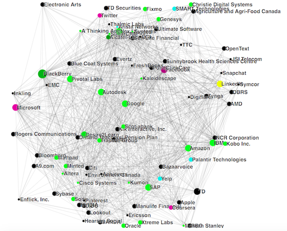

Company ranking at UW for Computer Sciences
[Click here for the final chart]
- Data scraping: work done by Vlyubin using the LinkedIn API.
- Data preparation: Done in R.
- Data exploration: Quick and dirty visualization of the data by hand and in R.
- Data visualization: Coding in D3! Got inspired by Nadiah Bremer.
Data Scraping
I always wanted to use an API for my data visualization projects. After talking to a few people, it seems like Python libraries such as Beautiful Soup and the Postman application are the most common ways to call an API and build a dataset. I really like this dataset by Vlyubin which is why I decided to skip the data scraping step. However, if time allows, I plan to create a more recent dataset or in a different field (data science? financial jobs? actuarial sciences?) to learn the Linkedin API.
First, some information about the dataset. In Vlyubin's own words, "Only students who started in 2010 to 2013 (inclusive) and did at least 2 internships with industry being Computer Software or Internet are considered. This data was collected in August 2015 and contains 2392 students."
Data Preparation
The dataset was saved in a text file. I used readLines() in R to parse it into a dataframe and gsub() to remove random whitespace and confusing substrings. Then, I looked at what the dataset contains.
Data Exploration
First, we need to understand our data. Based on the code snippet above, it seems a lot of students have not graduated yet. Out of 2392 students, 934 haven't even completed their fourth coop! For the goal of this simple data visualization, it is not a big deal. However, I would be more restrictive in my next data collecting. Let's see which companies hire the most students!
Awesome! Now, let's do one more quick visualization before turning to D3! Let's see which are the most popular five companies for each term. It seems like Blackberry hires a lot of sophomores and freshmen whereas Facebook hires a lot of Senior students.
Data Visualization
Next: D3! I used this tutorial by CCMCC to understand how the nodes and edges in a force layout should be generated using D3. Then, based on previous knowledge and a lot of help from Stack Overflow, I slowly built my project.

First draft in green! The nodes represent how many students worked at this company and the edges represent where else some of those students worked at.
I then realized the chart looks a lot better in black. I also modified the size of the nodes to something less sparse.
Added an interactive dashboard on the right of the 5 companies who hired the most coop students from this company (represented by positive rate) and the 5 companies who provided the largest number of interns to the company (represented by negative rate). If Google hired a student who worked at IBM two terms ago, the rate of IBM when clicked on Google will increase by 2. And to make it interesting, I added some colors to go with this dashboard. Here are how these colors are categorized. 
Click here for the data visualization!